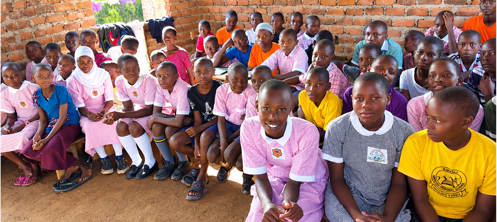

Current work
Love Wins Learning Centre
Our foundational learning-centre project, serving children in Mirama Village, Lubaale Parish, Sembabule District.
See our work ↗Rukundo Nesinga Initiative — meaning “Love Wins” — is a community-focused initiative creating safe, welcoming and engaging learning environments for children and young people in Uganda.
Our foundational project, Love Wins Learning Centre, is in Mirama Village, Lubaale Parish, Sembabule District.

Our learning-centre model looks beyond the classroom curriculum to nurture the whole child — academically, practically and personally.
Our foundational learning-centre project, serving children in Mirama Village, Lubaale Parish, Sembabule District.
See our work ↗
A planned day of love, hope and practical support for children in Lira City West on 25 November 2026.
See what’s planned ↗
Five programme areas spanning learning, youth empowerment, child welfare, talent and community development.
Explore programmes ↗Inspired in part by the founder’s own experience of barriers to education, RNI works where access to education and essential resources is limited. Our hope is that those who experience this love will one day extend it to others.
RNI’s work is not restricted to the location of our learning centre. We also engage other communities through outreach, sensitisation and partnerships.
We publish only figures that can be verified, and update them as records are confirmed.
Explore our impact ↗These labels appear throughout this website so it is always clear what exists today and what is still a plan.
Our foundational learning-centre project in Mirama Village, Lubaale Parish, Kyeera, Lwemiyaga County, Sembabule District — described using only verified details about its learners, facilities and services.
About the centre ↗Planned for 25 November 2026 in Lira City West: food, scholastic materials, gifts and a day of happiness, interaction and care. To be described as upcoming until it is completed.
Outreach details ↗A long-term ambition to grow learning centres across Northern, Eastern, Western and Central Uganda, and in time beyond Uganda. These are ambitions, not completed projects.
Our vision ↗Whether you give, volunteer, share our work or build a partnership, you can help children and young people have more opportunities to learn and grow.